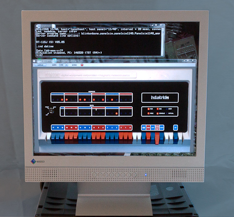
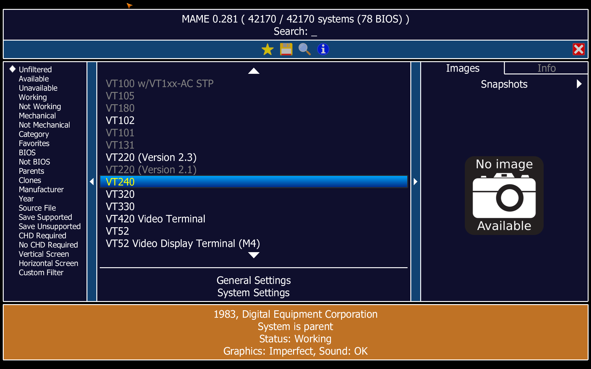
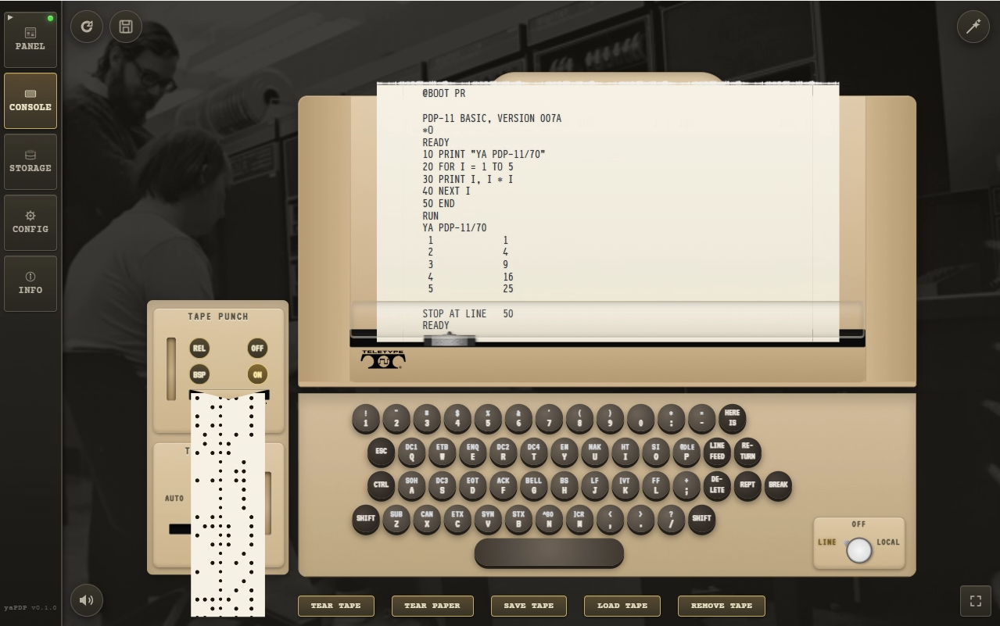

SIMH exists, it is excellent, and I did not use it. This is the second half of the story: the engineering compromises, the debugging, the architectural debts — and why the machine room was worth building twice.
I could have used SIMH. I built my own instead.
The first article was about the magic: how the thing came alive at all. This one is about the ordinary engineering prose underneath it — impatience, compromises, and what they cost.
"Then why write your own emulator when SIMH exists?" people asked after the first article. Fair question.
SIMH, by Bob Supnik, is the de facto standard of retro-emulation: cycle-accurate, dozens of machines under one roof, thousands of hours of collective debugging. If you want to poke at PDP-11 internals, run XXDP diagnostics or write your own OS, SIMH has no competition. Arguing otherwise would be silly; the best thing a lone developer can do is stop playing cowboy and join that community.
But start SIMH and you get a console that reproduces the hardware exactly — you can load an OS and work. What it does not give you is the immersion I was after, and the community's tools only solve part of it.


BlinkenBone is the best-known of them, and its Java panels for the PDP-11/40, 11/70 and PDP-10 are genuinely good — but they solve the panel, not the periphery. MAME is excellent for terminals, and I got as far as installing and configuring it, but a stable combination of the terminals I cared about and SIMH never happened: the ROMs were scattered, the one I found belonged to a newer terminal than the one I wanted, and the assembly started with a great deal of creaking and required multi-step preparation that killed the desire to continue before I reached the interesting part.
The saddest part was the absence of emulators for what I actually wanted: to dive another twenty years deeper, into the era of teletypes and paper tape, when Unix was being born — and with it the patterns we still use every day without noticing.
So the goal was to bring back the atmosphere of the machine room itself. Deliberately fewer devices, but working at the click of a link.
Booting an OS, working at the terminal, and then playing Lunar Lander on the VT11 vector display. The teletype can be heard, the carriage-return delay is visible, and the landing is drawn vector by vector. Watch it run — and I have never once landed it successfully: I lack both the habit of working with a light pen and any understanding of a properly organised "suicidal burn". But it grips me almost as much as landing the lunar module on an MK-61 did in my childhood.
The idea came together out of three unrelated things. The starting point was a failure: while trying to squeeze the atmosphere I wanted out of SIMH and its surroundings, it became clear that no off-the-shelf solution would do.
For about ten years I had a bookmark to google60, a Masswerk project where working in a machine room is felt right in the browser. That is where I first saw it was possible at all, and later its printing engine became the basis of my console — the paper feeding, the sounds, the overstrike are Norbert Landsteiner's work.
Alexei Morozov's project on building a Micro-80 impressed me differently: debugging firmware and adapting CP/M for his machine directly in the browser, in JavaScript — and the fact that after such virtual preparation the program ran on real hardware almost unchanged.
The last point was a holiday in Moscow and a visit to the Yandex Museum. A conversation with the curator about virtual exhibits standing next to real working hardware settled it: all the tools were already at hand.
I cannot remember a project in my career that was not a set of compromises. I hoped that in a project this small I could stay within the good case.
The main compromise was the usual one: between the itch to do everything here and now, and a sober assessment that such a project might exceed both my strength and my qualifications.
I found the working processor and periphery in Paul Nankervis's pdp11-js, which gave me the virtual machine and the control panel (heavily reworked since). I also looked at PCjs, whose PDP-11 implementation seemed considerably more complicated — and I was itching. The decision turned out to be partly a mistake and partly luck: I got an authentic working panel, a set of prepared disk and tape images to start from, and emulator code that was understandable at a glance, which matters enormously at the start.
The skeleton then drew itself:
The first build, with that arsenal in hand, came together in about two weeks of evenings. It booted the operating systems I had, let me play Adventure, and work in Unix V5 and 2.11 BSD. But a fast start on a serverless architecture is paid for dearly, and some things this application will never do.
And two softer ones: timings can drift if you overdo audio-visual effects, and the browser and Tauri's system WebView behave differently across platforms. I developed on Windows 11 with Chrome and checked on Windows 10 with Edge under VirtualBox; on Ubuntu 24.04 with Firefox there were no problems.
The last limitation is not about the platform at all. Paul's emulator is written clearly and simply — that is exactly why I took it — but simplicity has a price: extending it is harder than it should be, because the architecture does not help. More on that below.
From where I sit as a developer, the rest is: a ready base under suitable licences (no need to write the instruction set, interrupts and memory management from scratch), plenty of expressive means for UI and sound, a free installer in several flavours, cross-platform desktop for almost nothing thanks to Tauri, one stack for the main code, the tooling and the build, and debugging facilities I would envy at my day job.
yaPDP is a personal project and I work on it single-handed. The only way to get something working without drowning in endless debugging and misalignment is to automate as much as possible.
So I use a pack of npm scripts from package.json covering everything from build and validation to cleaning up the workspace, orchestrated with Google's Wireit, which for my purposes replaced GNU make and CMake. "It works on my machine" does not mean a process is repeatable, so every artifact is built only in the CI pipeline: versions do not get mixed and files do not get lost. Moving the project to GitHub helped here — I originally hosted it on GitVerse.ru and the CI work is where it started to fall apart.
For free, that gives me an issue tracker, a release store, the landing page on GitHub Pages (where the serverless nature of the emulator pays off), and these workflows:
There is another workflow about video, but that topic is large enough to deserve its own article.
What genuinely surprised me is that my toy project needed formal documents: I really did write RELEASING.md before I debugged the workflow it describes, and used it to build that workflow. A hobby quietly turns into a second job.
One more thing as a footnote: the GitHub repository is not the only one. A second repository on a second account is used for fork-development — a technique now often used for AI assistants, giving them a safe sandbox where they do the tasks, and the results come back as pull requests into the main repository as if another developer had proposed an improvement upstream. I mostly use it for CI-critical work, so as not to break the working process, and for testing the fork's landing page in detail — I have never liked debugging on the live site in the "bam-bam, into production" style. I may not be entirely right about this approach, though I checked and it does not violate GitHub's terms. Time will tell.
With this stack, the possibilities for debugging and instrumentation are practically unlimited, and this is the second reason the project is worth its compromises.
The interpreter is JavaScript, so it can be edited while debugging, as the task requires: from simply printing a value when a particular set of registers is written, to a hook that takes control at the right moment, logs, records, edits the emulator's memory and registers, and returns control.
The second killer feature is the JavaScript tooling. Puppeteer drives Chrome and Chromium over the DevTools protocol, headless by default — so I can programmatically start a browser with the emulator inside it (modified if needed), send commands from a script, and inspect the page's DOM and console.
As an illustration: that is how a accidentally-broken Lunar Lander was repaired. I put a print into the primitive-drawing code of the VT11 vector display, waited with a script for a sufficient number of writes (which means the splash screen is gone and the game is drawing), stopped the emulation by issuing HALT to the processor programmatically, and dumped memory.
The same engine does more than debugging: it takes the screenshots for the documentation and records the demonstration videos.
Since the project leans on the visual, the user documentation on the landing page must always carry current images. Updating them by hand is not an option, so screenshots of booted OSes, of the interface and of the icons are taken in Puppeteer and inserted into the documentation directly:
npm run screenshots:os npm run screenshots:manual
The scripts are tools/screenshots-os.js and tools/screenshots-manual.js. They can be run granularly or in batches. What remains in the TODO is fuzzy comparison of new screenshots against existing ones, so that unchanged images do not produce binary churn in git; its absence does not hinder the current process. The same Puppeteer records video, and the clips are then assembled by a separate pipeline. Documentation and videos come off one harness.
I took Paul's emulator for its clarity and simplicity, threw together a prototype that ran and did something like what I needed — and spoiled it in the process, by putting knowledge of the UI's DOM model into src/iopage.js, along with hooks here and there and other reprehensible things. Partly haste, partly the absence of any notion of a bus in the emulator: everything is stitched in place, which is precisely how it differs from PCjs, where the question is solved.
So now it is my turn to refactor and put it right, and without that there is no moving further. What saves me is Puppeteer again: at the cost of execution speed I can write any end-to-end test I need that looks at the product as a whole. Once there are enough of those, I can risk a refactor without much fear that the project ends there — there is always a working version to dance from. Then a second set of e2e tests can check the headless emulator on its own.
And here the era hands me a bonus: XXDP, DEC's specialised diagnostic operating system. Start the emulator, mount the disks, set up console I/O, and run DEC's own diagnostics — first by hand, then automated.
The first diagnostic passed beautifully. On the second one (EKBBF0) I got this:
LOOK AT CONSOLE LIGHTS: DATA LIGHTS SHOULD READ 166667, ADDRESS LIGHTS SHOULD READ 032236, CHANGE SWITCH 7 TO CONTINUE
Look at the console lamps: the data lamps should read 166667, the address lamps 032236, and to continue, change switch 7. Given how much is already done, a requirement like that is almost no work to implement — for a PDP-11 it is just reading and writing registers at a given address. So the work continues.
For convenience I built tools/headless-term.js, the descendant of the Puppeteer-driven tools/rt11-term.js, which does console I/O, mounts images and tapes, and lets the diagnostic run as a single command: tests/e2e-xxdp-ekbbf0.js.
Another debt was hanging in parallel: disk persistence was not entirely honest. Modified blocks lived only in JavaScript memory — the machine could be stopped and rebooted and the changes survived, but reloading the page lost them. That was fixed quickly, before the refactor finished, using the browser's local storage.
And the refactor made room for something more important: snapshots. Like the save states of a retro console — press Save, come back a week later, and the game starts where you left it. Load 2.11 BSD today, and a month later it carries on playing Adventure, or hammers out the second half of a document.
Two things I want.
The first is an MVP that fully solves the immersion problem. Learning an unfamiliar stack as I went, I did get the effect I was after:

Almost every switch on the panel works, local mode works, paper tapes are read and punched — and sometimes echoed, which is what they did in the sixties.
The second is to carry on with the core refactor: remove the original, and get more of DEC's XXDP diagnostics to pass, which increases the amount of DEC software that is guaranteed to work on yaPDP. The first steps are already in the repository: src/core/bus.js, src/core/device.js and src/core/machine.js.
There is a bus now, where before there were hooks. There are end-to-end tests that let me change the core without holding my breath, DEC's own diagnostics as an external reference, snapshots, and honest disk persistence. None of it is visible on the screen, which is the point: what you notice when you open the emulator is a teletype that behaves like a teletype and a panel whose switches throw like switches.
That was the goal, and it stands. The first article ends with what the machine room meant when I was fourteen and ran to my parents' work to stand next to it — I will not repeat it here, it is better there. What matters for this half of the story is that the room now has plumbing behind the wall, and I can keep working on it without the whole thing falling over.
Suggestions are welcome.
2026-09-24